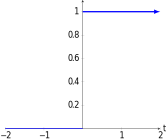
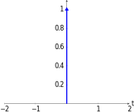
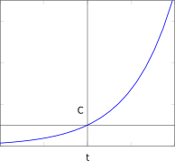
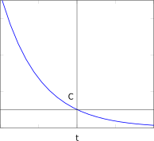
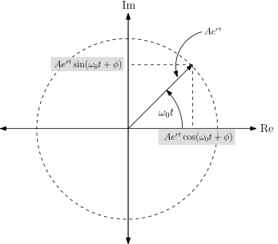

2 Continuous-Time Signals
A continuous-time (CT) signal is a function of one or more independent variables conveying information about a physical phenomena. This lecture gives an introduction to continuous-time signals as functions. You learn how to characterize such signals in a number of ways and are introduced to two very important signals: the unit impulse and the complex exponential.
2.1 Signals as Functions
In order to reason about signals mathematically we need a representation or model. Signals are modeled as functions, mappings between sets \[ f: A \rightarrow B \] where \(A\) is a set called the domain and \(B\) is a set called the range.
The most basic classification of signals depends on the sets that makeup the domain and co-domain. We will be interested in two versions of the domain, the reals denoted \(\mathbb{R}\) and the integers denoted \(\mathbb{Z}\). We will be interested in two versions of the co-domain, the reals \(\mathbb{R}\) and the set of complex numbers \(\mathbb{C}\).
Example
Analog Signal: If the function \(f: \mathbb{R} \rightarrow \mathbb{R}\), we call this an analog or real, continuous-time signal, e.g. a voltage at time \(t \in \mathbb{R}\), \(v(t)\). We will write these as \(x(t)\), \(y(t)\), etc. The units of \(t\) are seconds. Figure 2.1 shows some graphical representations, i.e. plots.
Example
Real, Discrete-time Signal: If the function \(f: \mathbb{Z} \rightarrow \mathbb{R}\), we call this a real, discrete-time signal, e.g. the temperature every day at noon. We will write these as \(x[n]\), \(y[n]\), etc. Note \(n\) is dimensionless. Figure 2.2 shows some graphical representations.

Some other possibilities:
- \(f: \mathbb{R} \rightarrow \mathbb{Z}\), digital, continuous-time signals, e.g. the output of a general purpose pin on a microcontroller
- \(f: \mathbb{Z} \rightarrow \mathbb{Z}\), digital, discrete-time signals, e.g. the signal on a computer bus
The co-domain can also be complex.
- \(f: \mathbb{R} \rightarrow \mathbb{C}\), complex-valued, continuous-time signals, e.g. \[ x(t) = e^{j\omega t} = \cos(\omega t) + j\sin(\omega t) \]
- \(f: \mathbb{Z} \rightarrow \mathbb{C}\), complex-valued, discrete-time signals, e.g. \[ x[n] = e^{j\omega n} = \cos(\omega n) + j\sin(\omega n) \]
Since the domains \(\mathbb{R}\) and \(\mathbb{Z}\) are usually interpreted as time, we will call these time-domain signals. In the time-domain, when the co-domain is \(\mathbb{R}\) we call these real signals. All physical signals are real. However complex signals will become important when we discuss the frequency domain.
2.2 Primitive Models
We mathematically model signals by combining elementary/primitive functions, for example:
- polynomials: \(x(t) = t\), \(x(t) = t^2\), etc.
- transendental functions: \(x(t) = e^t\), \(x(t) = \sin(t)\), \(x(t) = \cos(t)\), etc.
- piecewise functions, e.g. \[ x(t) = \left\{ \begin{array}{cl} f_1(t) & t < 0\\ f_2(t) & t \geq 0\\ \end{array}\right. \]
Example
Modeling a Switch: Consider a mathematical model of a switch, which moves positions at time \(t = 0\).
We use this model so much we give it it’s own name and symbol: Unit Step, \(u(t)\)
\[ u(t) = \left\{ \begin{array}{cl} 0 & t < 0\\ 1 & t \geq 0\\ \end{array}\right. \] so a mathematical model of the switch circuit above would be \(x(t) = V u(t)\).
Note: some texts define the step function at \(t=0\) to be \(1\) or \(\frac{1}{2}\). It is typically plotted like so:

Example
Pure audio tone at “middle C”. A signal modeling the air pressure of a specific tone might be
\[ x(t) = \sin\left(2\pi (261.6) t\right) \]
Example
Chord. The chord “G”, an additive mixture of tones at G, B, and D and might be modeled as
\[ x(t) = \sin\left(2\pi (392) t\right) + \sin\left(2\pi (494) t\right) + \sin\left(2\pi (293) t\right) \]
This example shows we can use addition to build-up signals to approximate real signals of interest.
2.3 Basic Transformations
We can also apply transformations to signals to increase their modeling flexibility.
magnitude scaling \[ x_2(t) = a x_1(t) \] for \(a \in \mathbb{R}\).
derivatives \[ x_2(t) = x_1^\prime(t) = \frac{d x_1}{dt}(t) \]
integrals \[ x_2(t) = \int\limits_{-\infty}^t x_1(\tau) \; d\tau \]
sums \[ y(t) = \sum\limits_{i} x_i(t) \] an important example we will see is the CT Fourier series.
multiplication (modulation) \[ y(t) = x_1(t) x_2(t) \] For example amplitude modulation \(y(t) = x(t)\sin(\omega_0 t)\)
time shift \[ x_2(t) = x_1(t+\tau) \]
- if \(\tau <0\) it is called a delay
- if \(\tau >0\) it is called an advance
time scaling \[ x_2(t) = x_1\left(\frac{t}{\tau}\right) \]
- if \(\tau >1\) increasing \(\tau\) expands in time, slows down the signal
- if \(0 < \tau < 1\) decreasing \(\tau\) contracts in time, speeds up the signal
- if \(-1 < \tau <0\) time reverses and increasing \(\tau\) contracts in time, speeding up the signal
- if \(\tau < -1\) time reverses and decreasing \(\tau\) expands in time, slows down the signal
Common uses are time reversal, \(x_2(t) = x_1(-t)\), and changing the frequency of of sinusoids.
2.4 Characterization of Signals
There are a few basic ways of characterizing signals.
Definition
Causal CT Signal. A CT signal is if \(x(t) = 0\) \(\forall t < 0\).
Anti-Causal CT Signal. A CT signal is or acausal if \(x(t) = 0\) \(\forall t \geq 0\).
A signal can be written as the sum of a causal and anti-causal signal.
Definition
Periodic Signals. A CT signal is if \(x(t) = x(t + T)\) \(\forall t\) for a fixed parameter \(T \in \mathbb{R}\) called the .
The simplest periodic signals are those based on the sinusoidal functions.
Definition
Even Signal. A CT signal is if \(x(t) = x(-t)\) \(\forall t\).
Odd Signal. A CT signal is if \(x(t) = -x(-t)\) \(\forall t\).
Any CT signal can be written in terms of an even and odd component \[ x(t) = x_e(t) + x_o(t) \] where \[ \begin{array}{ll} x_e(t) &= \frac{1}{2}\left\{x(t) + x(-t)\right\} \\ & \\ x_o(t) &= \frac{1}{2}\left\{x(t) - x(-t)\right\} \end{array} \]
Definition
Energy of a CT Signal. The energy of a CT signal \(x(t)\) is defined as a measure of the function \[ E_x = \lim_{T\rightarrow\infty} \int\limits_{-T}^T \lvert x(t) \rvert^2 dt \; . \]
Definition
Power of a CT Signal. The power of a CT signal is the energy averaged over an interval as that interval tends to infinity. \[ P_x = \lim_{T\rightarrow\infty} \frac{1}{2T} \int_{-T}^T \lvert x(t)\rvert^2 dt \; . \]
Signals can be characterized based on their energy or power:
- Signals with finite, non-zero energy and zero power are called energy signals.
- Signals with finite, non-zero power (and by implication infinite energy) are called power signals.
Note, these categories are non-exclusive, some signals are neither energy or power signals.
2.5 Unit Impulse Function
An important CT signal is the unit impulse function, also called the “delta” \(\delta\) function for the symbol traditionally used to define it. Applying this signal to a system models a “kick” to that system. For example, consider striking a tuning fork. The reason this signal is so important is that it will turn out that the response of the system to this input tells us all we need to know about a linear, time-invariant system!
Example
CT Impulse Function. The CT impulse function is not really a function at all, but a mathematical object called a “distribution”. Some equivalent definitions:
\[ \delta(t) = \lim_{\epsilon \rightarrow 0}\left\{ \begin{array}{ll} \frac{1}{2\epsilon} & |t| < \epsilon\\ 0 & \text{else} \end{array} \right. \]
\[ \delta(t) = \lim_{\epsilon \rightarrow 0} \frac{1}{\sqrt{2\pi}\epsilon} e^{-\frac{t^2}{2\epsilon^2}} \] Note the area under each definition is always one.
In practice we can often use the following definition and some properties, without worrying about the distribution functions. \[ \delta(t) = \left\{ \begin{array}{ll} 0 & t \neq 0\\ \infty & t = 0 \end{array} \right. \] which we draw as a vertical arrow in plots:

Note the height of the arrow is arbitrary. Often in the case of a non-unit impulse function the area is written in parenthesis near the arrow tip.
The following properties of the impulse function will be used often.
- The area under the unit impulse is unity since by definition \[ \int\limits_{-\infty}^{\infty} \delta(t) \; dt = 1 \]
- Sampling property: \(x(t)\delta(t-t_0) = x(t_0)\delta(t-t_0)\)
- Sifting Property: \[ \int\limits_{a}^{b} x(t)\delta(t-t_0) \; dt = x(t_0) \] for any \(a < t_0 < b\).
We previously defined the unit step function. The impulse can be defined in terms of the step: \[ \delta(t) = \frac{du}{dt} \] and vice-versa \[ u(t) = \int\limits_{-\infty}^{t} \delta(\tau) \; d\tau \] using the notion of distributions, e.g.
\[ u(t) = \int\limits_{-\infty}^{t} \delta(\tau) \; d\tau = \lim_{\epsilon \rightarrow 0} \int\limits_{-\infty}^{t} \frac{1}{\sqrt{2\pi}\epsilon} e^{-\frac{\tau^2}{2\epsilon^2}} \; d\tau = \lim_{\epsilon \rightarrow 0} \frac{1}{2}\left(1+\text{erf}\left( \frac{t}{\sqrt{2}\epsilon}\right)\right) \]
The step and impulse function are related, but in many cases finding the response of a system to a step input is easier.
We can apply additional transformations to the impulse and step functions to get other useful signals, e.g.
- ramp \[ r(t) = \int\limits_{-\infty}^{t} u(\tau) \; d\tau = tu(t) \]
- causal pulse of width \(\epsilon\) \[ p(t) = u(t) - u(t-\epsilon) \]
- non-causal pulse of width \(2\epsilon\) \[ p(t) = u(t+\epsilon) - u(t-\epsilon) \]
2.6 CT Complex Exponential
One of the most important signals in systems theory is the complex exponential: \[ x(t) = C\, e^{a t} \] where the parameters \(C, a \in \mathbb{C}\) in general.
When \(C\) and \(a\) are both real (\(\Im(C) = \Im(a) = 0\)), we have the familiar exponential. When \(a > 0\) and \(C > 0\), \(x(t) = C e^{a t}\) looks like:

When \(a < 0\) and \(C > 0\), \(x(t) = C e^{a t}\) looks like:

If \(C < 0\) the signals reflect about the time axis.
To get the pure sinusoidal case, let \(C \in \mathbb{R}\) and \(a\) be purely imaginary: \(a = j\omega_0\): \[ x(t) = Ce^{j\omega_0 t} \] where \(\omega_0\) is the frequency (in radians/sec). This is called the complex sinusoid.
By Euler’s identity: \[ e^{j\omega_0 t} = \cos(\omega_0 t) + j\sin(\omega_0 t) \] and \[ \Re(x(t)) = \cos(\omega_0 t) = \frac{1}{2}\left( e^{j\omega_0 t} + e^{-j\omega_0 t} \right) \]
\[ \Im(x(t)) = \sin(\omega_0 t) = \frac{1}{2j}\left( e^{j\omega_0 t} - e^{-j\omega_0 t} \right) \] are both real sinusoids.
Note that the sinusoids are periodic. Recall a signal \(x(t)\) is periodic with period \(T\) if \[ x(t) = x(t+T) \; \forall t \] In the case of the complex sinusoid \[ Ce^{j\omega_0 t} = Ce^{j\omega_0 (t+T)}= Ce^{j\omega_0 t}\underbrace{e^{j\omega_0 T}}_{\text{must be 1}} \]
- if \(\omega_0 = 0\) this is true for all \(T\)
- if \(\omega_0 \neq 0\), then to be periodic \(\omega_0 T = 2\pi m\) for \(m = \pm 1, \pm 2, \cdots\). The smallest \(T\) for which this is true is the fundamental period \(T_0\) \[ T_0 = \frac{2\pi}{|\omega_0|} \] or equivalently \(\omega_0 = \frac{2\pi}{T_0}\)
Some useful properties of sinusoids:
- If \(x(t)\) is periodic with period \(T\) and \(g\) is any function then \(g(x(t))\) is periodic with period \(T\).
- If \(x_1(t)\) is periodic with period \(T_1\) and \(x_2(t)\) is periodic with period \(T_2\), and if there exists positive integers \(a,b\) such that \[ aT_1 = b T_2 = P \] then \(x_1(t) + x_2(t)\) and \(x_1(t)x_2(t)\) are periodic with period \(P\)
The last property implies that both \(T_1\) and \(T_2\) must both be rational in \(\pi\) or neither should be. For example
- \(x(t) = \sin(2\pi t) + \cos(5\pi t)\) is periodic
- \(x(t) = \sin(2 t) + \cos(5 t)\) is periodic
- \(x(t) = \sin(2\pi t) + \cos(5 t)\) is not periodic
When the parameter \(C\) is complex we get a phase shift. Again let \(a = j\omega_0\). When \(C\) is complex we can write it as \(C = Ae^{j\phi}\) where \(A = |C|\) and \(\phi = \angle C\). Then
\[ x(t) = Ae^{j\phi} e^{j\omega_0 t} = Ae^{j(\omega_0 t+\phi)} \] and \[ \Re(x(t)) = A\cos(\omega_0 t+\phi) \]
\[ \Im(x(t)) = A\sin(\omega_0 t+\phi) \]
Since \(\sin\) is a special case of \(\cos\), i.e. \(\cos(\theta) = \sin(\theta + \frac{\pi}{2})\), the general real sinusoid is
\[ A\cos(\omega_0 t + \phi) \]
- \(A\) is called the amplitude
- \(\omega_0\) is again the frequency in radians/sec.
- \(\phi\) is called the phase shift and is related to a time shift \(T_s\) by \[ \phi = \omega_0T_s \]
For example the signal graphically represented as follows

has the functional representation
\[ x(t) = 2\cos\left(\frac{\pi}{2} (t+\tfrac{1}{2}) \right) = 2\cos\left(\frac{\pi}{2} t +\frac{\pi}{4} \right) \]
2.6.1 Energy of CT complex sinusoid
Recall the energy of a CT signal \(x(t)\) is
\[
E_x = \lim_{T\rightarrow\infty} \int\limits_{-T}^T \lvert x(t) \rvert^2 dt \; .
\] Substituting \(x(t) = e^{j\omega_0 t}\) and letting \(T = N T_0\) \[
E_x = \lim_{N\rightarrow\infty} \int\limits_{-N T_0}^{N T_0} \underbrace{\lvert e^{j\omega_0 t} \rvert^2}_{\text{always 1}} \; dt = \lim_{N\rightarrow\infty} 2NT_0 = \infty
\]
2.6.2 Power of CT complex sinusoid
Recall the power of a CT signal \(x(t)\) is \[ P_x = \lim_{T\rightarrow\infty} \frac{1}{2T} \int\limits_{-T}^T \lvert x(t) \rvert^2 dt \; . \] Again, substituting \(x(t) = e^{j\omega_0 t}\) and letting \(T = N T_0\) \[ P_x = \lim_{N\rightarrow\infty} \frac{1}{2NT_0} \int\limits_{-N T_0}^{N T_0} \underbrace{\lvert e^{j\omega_0 t} \rvert^2}_{\text{always 1}} \; dt = \lim_{N\rightarrow\infty} \frac{1}{2NT_0} 2NT_0 = 1 \]
2.6.3 Harmonics
Two CT complex sinusoids are harmonics of one another is both are periodic in \(T_0\). This occurs when
\[ x_k(t) = e^{jk\omega_0 t} \; \text{for} \; k = 0, \pm 1, \pm 2, \cdots \]
The term comes from music where the vibrations of a string instrument are modeled as a weighted combination of harmonic tones.
2.6.4 Geometric interpretation of the Complex Exponential
In the general case we get a sinusoid signal modulated by an exponential. Let \(C = Ae^{j\phi}\) and \(a = r + j\omega_0\), then \[ x(t) = C e^{a t} = Ae^{j\phi} e^{(r+j\omega_0)t} \] Expanding the terms and using Euler’s identity gives: \[ x(t) = \underbrace{Ae^{rt}\cos(\omega_0 t+\phi)}_{\Re \text{part}} + j \underbrace{Ae^{rt}\sin(\omega_0 t+\phi)}_{\Im \text{part}} \] Each part is a real sinusoid whose amplitude is modulated by a real exponential.
An important visualization of the general case is to view the signal \(x(t)\) as a vector rotating counter-clockwise in the complex plane for positive \(t\).

For \(r < 0\) the tip of the arrow traces out an inward spiral, whereas for \(r > 0\) it traces out an outward spiral. For \(r = 0\) it traces out the unit circle.
2.7 Example Problems
2.7.1
Consider a signal described by the function \[ x(t) = e^{-3t}\sin(10\pi t)u(t) \]
- Determine the magnitude and phase of \(x\left( \frac{1}{20}\right)\)
Solution:
Substituting \(t = \frac{1}{20}\) gives \[ x\left( \frac{1}{20}\right) = e^{-3\frac{1}{20}}\sin\left(10\pi \frac{1}{20}\right)u\left( \frac{1}{20}\right) = e^{-\frac{3}{20}} \approx 0.86 \] Since the signal is purely real and exponential is always positive, the magnitude is \[ \left|x\left( \frac{1}{20}\right)\right| = \left| e^{-\frac{3}{20}}\right| = e^{-\frac{3}{20}} \approx 0.86 \] and the phase is \[ \angle x\left( \frac{1}{20}\right) = 0 \]
- Using Matlab, plot the signal \(|x(t)|\) between \([-2, 2]\). Give your code and embed the plot.
Solution:
% Solution to Example Problem 2.7.1b
1t = -2:0.001:2;
2x = exp(-3*t).*sin(10*pi*t).*heaviside(t);
3hp = plot(t,abs(x));
grid on;
xh = xlabel('t');
yh = ylabel('x(t)');
th = title('Plot for Example Problem 2.7.1b');
% make the plot more readable
set(gca, 'FontSize', 12, 'Box', 'off', 'LineWidth', 2);
set(hp, 'linewidth', 2);
set([xh, yh, th], 'FontSize', 12);
set(gcf, 'PaperPositionMode', 'auto');
print -dpng example_2_7_1.png- 1
- Create time slices from -2 seconds to 2 seconds in increments of 1 millisecond
- 2
- Compute the signal value at each time slice
- 3
- Plot the signal
2.7.2
Find a solution to the differential equation \[ \frac{dy}{dt}(t) + 9y(t) = e^{-t} \] for \(t \geq 0\), when \(y(0) = 1\).
Solution: The homogeneous equation is \[ \frac{dy_h}{dt}(t) + 9y_h(t) = 0 \] with initial condition \(y_h(0) = 1\). Its solution is of the form \[ y_h(t) = C\, e^{-9t} \] for constant \(C\). Using the initial condition \[ y_h(0) = C\, e^{-0} = C = 1 \] gives \[ y_h(t) = e^{-9t} \] The particular solution is of the form \[ y_p(t) = C_1 e^{-t} + C_2 e^{-9t} \] Substitution and equating coefficients gives \(C_1 = \frac{1}{8}\) and \(C_2 = -\frac{1}{8}\). The total solution is the sum of the two solutions or \[ y(t) = \frac{1}{8} e^{-t} - \frac{1}{8} e^{-9t} + e^{-9t} = \frac{1}{8} e^{-t} + \frac{7}{8} e^{-9t} \]
2.7.3
Find a solution to the differential equation \[ \frac{dy}{dt}(t) + 9y(t) = e^{-t} \] for \(t \geq 0\), when \(y(0) = 1\).
Solution: The homogeneous equation is \[ \frac{dy_h}{dt}(t) + 9y_h(t) = 0 \] with initial condition \(y_h(0) = 1\). Its solution is of the form \[ y_h(t) = C\, e^{-9t} \] for constant \(C\). Using the initial condition \[ y_h(0) = C\, e^{-0} = C = 1 \] gives \[ y_h(t) = e^{-9t} \] The particular solution is of the form \[ y_p(t) = C_1 e^{-t} + C_2 e^{-9t} \] Substitution and equating coefficients gives \(C_1 = \frac{1}{8}\) and \(C_2 = -\frac{1}{8}\). The total solution is the sum of the two solutions or \[ y(t) = \frac{1}{8} e^{-t} - \frac{1}{8} e^{-9t} + e^{-9t} = \frac{1}{8} e^{-t} + \frac{7}{8} e^{-9t} \]
2.7.4
Compute the integral \[ \int\limits_{-\infty}^{\infty} e^{-t^2} \, \delta(t-10)\; dt \] where \(\delta(t)\) is the delta function.
Solution:
Using the sifting property of the delta function \[ \int\limits_{a}^{b} f(t) \, \delta(t-t_0)\; dt = f(t_0) \] for \(a < t_0 < b\), we get \[ \int\limits_{-\infty}^{\infty} e^{-t^2} \, \delta(t-10)\; dt = e^{-100} \approx 0 \]